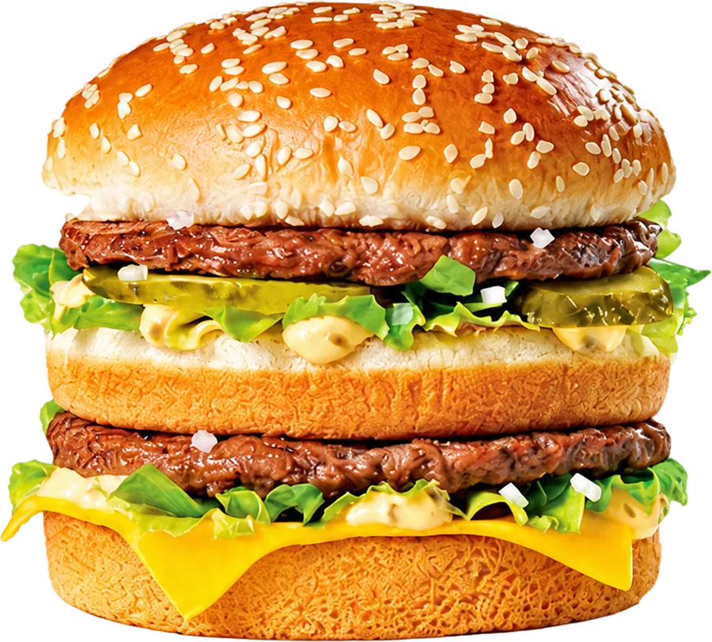

<!doctype html>
<html lang="fr">
<head>
<meta charset="utf-8">
<title>Visuel de la carte fidélité BEST BURGER</title>
<!--
  Modèle du visuel de la carte (bannière Google Wallet, bandeau Apple Wallet, carte du site).
  Paramètres : ?layer=fond|plein|vide|cadeau&w=&h=&format=google|apple
  - fond : le décor seul, sans tampons ; window.zoneTampons donne la zone où le serveur les place.
  - plein, vide, cadeau : un tampon, sur fond transparent, dans un carré de w px.
  Rendu par rendre.mjs ; les tampons sont ensuite placés par src/visuel.js (même disposition).
-->
<style>
@font-face{font-family:Anton;src:url(../../../fonts/anton-latin.woff2) format("woff2");font-display:block}
:root{--noir:#0d0d0d;--jaune:#ffce00;--creme:#f6efe2}
*{box-sizing:border-box}
html,body{margin:0;padding:0;background:transparent}
#fond{position:absolute;left:0;top:0;overflow:hidden;background:var(--noir)}
#fond > div{position:absolute;inset:0}
#fond .grain{opacity:.07;mix-blend-mode:overlay}
#fond .burger{position:absolute;display:block;filter:drop-shadow(-8px 14px 22px rgba(0,0,0,.75)) saturate(1.06) contrast(1.03)}
#fond .marque{position:absolute;inset:auto;display:flex;align-items:center;white-space:nowrap;font-family:Anton;line-height:1;letter-spacing:.03em}
#fond .marque b{font-weight:400;color:var(--jaune)}
#fond .marque .nom{color:var(--creme)}
#fond .marque .sep{display:inline-block;background:var(--jaune);transform:rotate(45deg)}
#fond .marque .carte{color:rgba(246,239,226,.62)}
#tampon{position:absolute;left:0;top:0}
#tampon svg{display:block;width:100%;height:100%}
</style>
</head>
<body>
<script>
(function () {
const q = new URLSearchParams(location.search);
const layer = q.get("layer") || "fond";
const W = +q.get("w") || 1032, H = +q.get("h") || 336;
const format = q.get("format") || (W / H > 2.85 ? "google" : "apple");

// Pictogramme burger dans une boîte de 240 px (centre 120,120).
function burger(fill, hole) {
  return `
  <g fill="${fill}">
    <path d="M58 113 C58 80 86 60 120 60 C154 60 182 80 182 113 Q182 119 176 119 L64 119 Q58 119 58 113 Z"/>
    <rect x="52" y="128" width="136" height="22" rx="11"/>
    <path d="M62 159 L178 159 Q182 159 182 163 L182 167 Q182 184 165 184 L75 184 Q58 184 58 167 L58 163 Q58 159 62 159 Z"/>
  </g>
  <g fill="${hole}">
    <ellipse cx="96" cy="86" rx="6.5" ry="4" transform="rotate(-22 96 86)"/>
    <ellipse cx="122" cy="77" rx="6.5" ry="4" transform="rotate(4 122 77)"/>
    <ellipse cx="147" cy="88" rx="6.5" ry="4" transform="rotate(24 147 88)"/>
    <ellipse cx="120" cy="100" rx="6" ry="3.6" transform="rotate(-8 120 100)"/>
  </g>`;
}

function cadeau(c) {
  return `
  <g fill="${c}">
    <rect x="66" y="104" width="108" height="26" rx="6"/>
    <path d="M74 136 H166 V170 Q166 182 154 182 H86 Q74 182 74 170 Z"/>
  </g>
  <rect x="112" y="104" width="16" height="78" fill="#120f08"/>
  <g fill="none" stroke="${c}" stroke-width="11" stroke-linejoin="round" stroke-linecap="round">
    <path d="M118 100 C104 70 76 72 80 90 C83 102 104 101 118 100 Z"/>
    <path d="M122 100 C136 70 164 72 160 90 C157 102 136 101 122 100 Z"/>
  </g>`;
}

const etincelle = (x, y, r, c) => `<path fill="${c}" d="M${x} ${y - r} Q${x + r * .16} ${y - r * .16} ${x + r} ${y} Q${x + r * .16} ${y + r * .16} ${x} ${y + r} Q${x - r * .16} ${y + r * .16} ${x - r} ${y} Q${x - r * .16} ${y - r * .16} ${x} ${y - r} Z"/>`;

function tampon(kind) {
  if (kind === "plein") {
    return `<svg viewBox="0 0 240 240" xmlns="http://www.w3.org/2000/svg">
      <defs><radialGradient id="g" cx="38%" cy="30%" r="80%">
        <stop offset="0" stop-color="#ffe45c"/><stop offset=".55" stop-color="#ffce00"/><stop offset="1" stop-color="#f0b000"/>
      </radialGradient></defs>
      <circle cx="120" cy="120" r="114" fill="url(#g)"/>
      <circle cx="120" cy="120" r="101" fill="none" stroke="#0d0d0d" stroke-opacity=".22" stroke-width="3"/>
      <g transform="translate(120 122) scale(1.08) translate(-120 -122)">${burger("#0d0d0d", "#ffce00")}</g>
    </svg>`;
  }
  if (kind === "vide") {
    return `<svg viewBox="0 0 240 240" xmlns="http://www.w3.org/2000/svg">
      <circle cx="120" cy="120" r="110" fill="#fff3cf" fill-opacity=".07" stroke="#f6efe2" stroke-opacity=".42" stroke-width="7"/>
      <g opacity=".2">${burger("#f6efe2", "#1b1912")}</g>
    </svg>`;
  }
  // Récompense : sceau festonné, cadeau jaune.
  const n = 18, R1 = 115, R2 = 104, c = 120;
  let d = "";
  for (let i = 0; i < n; i++) {
    const a = k => ((i + k) / n) * Math.PI * 2 - Math.PI / 2;
    const p = (r, k) => `${(c + r * Math.cos(a(k))).toFixed(2)} ${(c + r * Math.sin(a(k))).toFixed(2)}`;
    d += (i === 0 ? `M${p(R2, 0)} ` : "") + `Q${p(R1 * 1.06, .5)} ${p(R2, 1)} `;
  }
  return `<svg viewBox="0 0 240 240" xmlns="http://www.w3.org/2000/svg">
    <defs><radialGradient id="g" cx="50%" cy="45%" r="60%">
      <stop offset="0" stop-color="#3a2c00"/><stop offset="1" stop-color="#120f08"/>
    </radialGradient></defs>
    <path d="${d}Z" fill="url(#g)" stroke="#ffce00" stroke-width="7" stroke-linejoin="round"/>
    ${cadeau("#ffce00")}
    ${etincelle(178, 64, 13, "#ffe45c")}
    ${etincelle(62, 166, 8, "#ffe45c")}
  </svg>`;
}

if (layer !== "fond") {
  const el = document.createElement("div");
  el.id = "tampon";
  el.style.width = el.style.height = W + "px";
  el.innerHTML = tampon(layer);
  document.body.appendChild(el);
  return;
}

// Décor : photo du burger à droite, zone calme à gauche pour les tampons.
const L = format === "google"
  ? { marque: { top: 28, size: 30 }, zone: { x: 32, y: 82, h: 226 }, burger: { h: 318, left: 691, top: 12 } }
  : { marque: { top: 38, size: 38 }, zone: { x: 40, y: 116, h: 270 }, burger: { h: 392, left: 715, top: 20 } };
L.zone.w = L.zone.h * 2.5;
const B = L.burger, bw = B.h * 900 / 812;

const grain = "data:image/svg+xml," + encodeURIComponent(
  `<svg xmlns='http://www.w3.org/2000/svg' width='220' height='220'><filter id='n'><feTurbulence type='fractalNoise' baseFrequency='.85' numOctaves='2' stitchTiles='stitch'/><feColorMatrix values='0 0 0 0 1  0 0 0 0 1  0 0 0 0 1  0 0 0 1.2 -.2'/></filter><rect width='100%' height='100%' filter='url(#n)'/></svg>`);

// Rappel du logo : le quadrillage du cornet de frites, très discret, dans une bande oblique derrière le burger.
const s = B.h / 9;
const treillis = "data:image/svg+xml," + encodeURIComponent(
  `<svg xmlns='http://www.w3.org/2000/svg' width='${s}' height='${s}'><path d='M0 0 L${s} ${s} M${s} 0 L0 ${s}' stroke='#f6efe2' stroke-width='${s / 14}' fill='none'/></svg>`);
const bande = { x: B.left - B.h * .18, w: W };

const fond = document.createElement("div");
fond.id = "fond";
fond.style.width = W + "px"; fond.style.height = H + "px";
fond.innerHTML = `
  <div style="background:
     radial-gradient(${B.h * .55}px ${B.h * .62}px at ${B.left + bw * .5}px ${B.top + B.h * .42}px, rgba(255,206,0,.22), rgba(255,170,0,.07) 55%, rgba(13,13,13,0) 75%),
     radial-gradient(${W * .6}px ${H * 1.1}px at ${W * .06}px ${-H * .35}px, rgba(255,206,0,.09), rgba(13,13,13,0) 70%),
     linear-gradient(180deg, rgba(255,255,255,.015), rgba(0,0,0,.25))"></div>
  <div style="background:url(&quot;${treillis}&quot;);opacity:.05;
     clip-path:polygon(${bande.x + H * .35}px 0, ${W}px 0, ${W}px ${H}px, ${bande.x}px ${H}px)"></div>
  <div class="grain" style="background-image:url(&quot;${grain}&quot;)"></div>
  
  <p class="marque" style="margin:0;left:${L.zone.x + L.zone.h * .035}px;top:${L.marque.top}px;font-size:${L.marque.size}px">
    <b>BEST</b>&nbsp;<span class="nom">BURGER</span>
    <span class="sep" style="width:${L.marque.size * .2}px;height:${L.marque.size * .2}px;margin:0 ${L.marque.size * .42}px"></span>
    <span class="carte">CARTE FIDÉLITÉ</span>
  </p>`;
document.body.appendChild(fond);
window.zoneTampons = { ...L.zone };
})();
</script>
</body>
</html>
